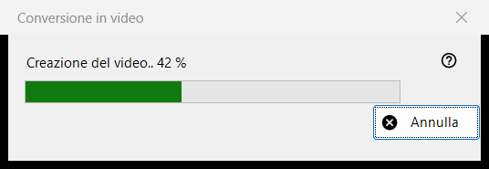
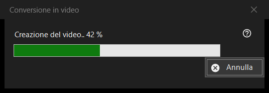

Conversione in video
Scopo
La finestra di avanzamento di Converti in video: trasforma una GIF, un WebP o un APNG animati in un MP4 e poi elimina l'originale. Si apre dopo che hai confermato la conversione, resta sopra il visualizzatore finché il lavoro non termina e ha un solo pulsante, Annulla.


In questo ordine
- Mostra un'immagine animata.
- Scegli Converti in video.. nel menu dell'immagine, oppure premi il pulsante Converti in video della barra degli strumenti; entrambi esistono solo mentre è sullo schermo un'animazione, e non c'è alcuna scorciatoia da tastiera.
- Leggi la conferma e premi Converti.
- Se ti viene chiesto di scaricare FFmpeg, rispondi Sì.
- Osserva la barra, oppure premi Annulla.
- Il visualizzatore apre il nuovo MP4.
Gli elementi
Avvio della conversione
Il comando viene offerto solo per le animazioni, mai per un'immagine fissa o un video, e il visualizzatore lo rifiuta per un contenitore protetto o per un posto in cui accanto al file non si può scrivere nulla. La riproduzione si ferma quando il lavoro inizia.
La conferma
Dice in sostanza: l'originale verrà convertito nel nuovo MP4 e viene eliminato definitivamente, senza passare dal Cestino. Se l'animazione ha trasparenza aggiunge: La trasparenza verrà riempita di nero. Annulla è la risposta predefinita. La casella Non chiedere più fino alla chiusura del programma dura solo fino alla chiusura del visualizzatore; non viene mai salvata.
FFmpeg
La conversione usa FFmpeg, che non fa parte del programma. Se manca, ti viene chiesto una sola volta del download (la domanda mostra la dimensione; il file arriva dal sito del progetto, viene salvato localmente ed è software libero con licenza GPL). Rispondendo No ci si ferma qui e non viene creato né eliminato nulla.
La finestra di avanzamento
Il titolo dice Creazione del video.. con una percentuale, e la barra la segue. Quando la durata dell'animazione non è nota, la barra si muove soltanto avanti e indietro, senza numero. Annulla, il tasto Esc e il pulsante di chiusura significano la stessa cosa: la finestra resta un momento finché l'encoder non si è davvero fermato, poi si chiude e il visualizzatore segnala Conversione annullata. Nel frattempo il visualizzatore non è utilizzabile.
Cosa ottieni
Un MP4 nella stessa cartella con lo stesso nome (se il nome è occupato viene aggiunto un numero tra parentesi), con la frequenza di fotogrammi dell'animazione, tra 1 e 50 fotogrammi al secondo. Viene scritto con un nome temporaneo e rinominato quando è pronto. L'originale viene eliminato solo dopo che l'MP4 esiste con il nome definitivo ed è stato verificato che contenga l'intera animazione. La riga di stato dice Fatto e il visualizzatore mostra il video.
Quando qualcosa va storto
L'originale resta e la riga di stato ne dice il motivo: Impossibile creare il video, con la causa; il video è stato creato ma l'originale non è stato eliminato; oppure non è stato possibile verificare la completezza del video e l'originale è stato conservato. Un'esecuzione fallita lascia l'originale intatto, rimuove il file temporaneo e scrive i dettagli nel registro.